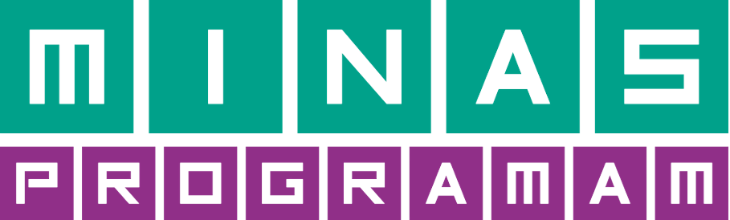

Minas Programam - Bloco 1>
<link rel="icon" href="./images/logotitle.png">
</head>
<body>
<header>
<figure>

</figure>
<h1>Lições Aprendidas</h1>
<span>Turma 22.1</span>
</header>
<h2>Esta página foi desenvolvida em HTML estilizada<br> com CSS, como projeto do primeiro bloco.</h2>
<h3>Desenvolvido por Aline Almeida</h3>
<main>
<aside>
<div class="aline">
</div>
<div id="perfil">
<p>Aline Almeida</p>
<p>Html | CSS | JavaScript</p>
<p>Blá Blá Blá</p>
<p>pi pi pi pó pó pó</p>
<p></p>
</div>
</aside>
<article>
<ul>Conteúdos abordados em sala:
<li>Agilidade e Produtividade</li>
<li>Frontend: conceito básicos I</li>
<li>Projetos: Idealização</li>
<li>Projetos: UX (Pesquisa)</li>
<li> Frontend: Conceitos básicos II</li>
<li>Projetos: UI (interface)</li>
<li>Versionamento de Código</li>
<li>Frontend - (HTML)</li>
<li>Frontend - (CSS)</li>
<li>Deploy Frontend - Projeto Portifólio</li>
<li>Software Livre</li>
<li>Projetos: Infraestrutura</li>
<li>Lógica de Programação I</li>
</ul>
</article>
</main>
<footer>
<p div="pfooter">Acesse os Links</p>
<a href="https://minasprogramam.com/"></a>
<a href="https://www.linkedin.com/in/alinealmeidadev/"></a>
<a href="https://github.com/alinealmeidadev"></a>
</footer>
</body>
</html>